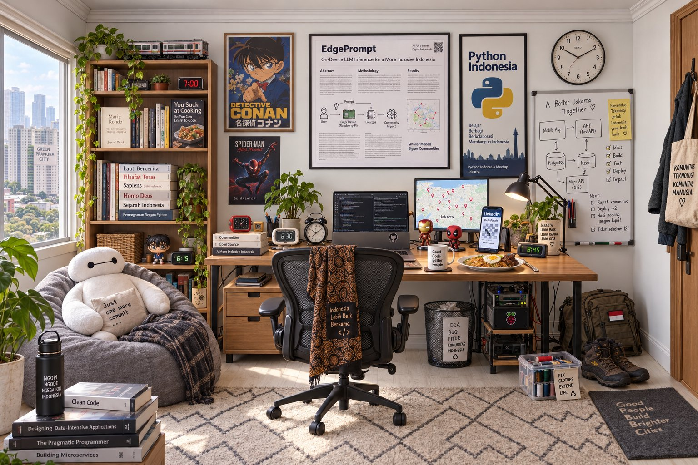

kaji
Research notes, apps and examples from building personal software. Every note and page is indexed below.

Notes and pages
- (Human) Attention is All You Need: an IDSW talk, checked
- AI product insights
- Automatic layout for transit-style maps
- CodingTool: small developer utilities, with per-tool data boundaries
- DARVO: deny, attack, reverse victim and offender, explained
- Dukkung: one creator page for tips, sales and memberships
- e2e: an open-source test framework with agent steps
- Everything Has an API If You're Willing to Prompt: an IDSW 2026 talk, checked
- Five conflict modes: the Thomas-Kilmann model, explained
- Fork or keep: repos vs open source
- from air to packets and back: an IDSW talk, checked
- Front-End Job is Dying: What I Own as a Design Engineer: an IDSW talk, checked
- Genesis: schema and GCP infrastructure in one workspace
- Hamming, Levenshtein and missing letters
- Honest wording: every change
- IDSW community noticeboard: jobs, tools and services
- import zerotrust: an IDSW talk, checked
- InfoTech Jakarta: a starting point for tech events
- Intelecto: learning with AI inside, external AI access unconfirmed
- Is AI safe? Yes, but: an IDSW keynote, checked
- Kubeletto: container hosting, with beta billing questions
- Laras Router: a model API gateway with a QRIS wallet
- Mentor sign-off without accounts: what we learned building it
- Midtrans agent skills and receiving customer payments
- Mihon-style progress notification for batch update checks
- mobile-agent-testers: AI testers on many phones
- Models so far: size, role and limits
- NEO App and Excellent: app hosting and managed email
- Pelokalan: contribution ideas (review)
- PenGPT in your browser: handwriting and sketch demo
- PenGPT: a generative transformer for handwriting and sketches, explained
- PI-Desktop: a desktop workspace for coding agents
- PingPolls: a conversation, a choice and a timing signal
- PythonID-bot: contribution ideas (review)
- PythonID-bot: recent cleanup in four views
- Remote Browser: browser fleet and self-hosting requirements
- Secrets: OpenBao hosting options and a leak recovery plan
- Secrets: three jobs, three tools (review)
- So Good They Can't Ignore You: Irvan's 2015 reading note
- startup-class/setup: a 2013 EC2 setup script, read
- The Bugs Were Always There: an IDSW 2026 keynote, checked
- Tokenomics of Testing: an IDSW 2026 talk, checked
- Untuk Internal: Bangun Tool Sendiri, Langganan, atau On-premise Opensource?: an IDSW lightning talk, checked
- What Good Mentorship Felt Like to Me as a Junior Engineer: an IDSW lightning talk, checked
- YukYuk: AI media tools, credits and visibility choices